数据来源：知识星球「南半球聊财经」星主 Jason 不跪 当日发帖（共 10 帖，时间 13:59–15:08）。本报告逐帖转写原文、解读图片、补充背景知识，帮助建立宏观/财经的系统理解。
今日要点速览
今天 Jason 一口气转了 10 条内容，主线可以串成三条：（1）"利率—投资—增长"的宏观链条——伍戈讲企业投资回报率已跌破贷款利率（投资转负）、财通讲美债利率破关口触发特朗普"TACO"、方正预测 7 月 PPI 环比再度走弱，共同指向"融资不贵但没人愿意投"的通缩式困局。（2）资产与结构主题——申万宏源用 9 张图论证黄金这轮暴跌是"投资需求退坡"而非"去美元化终结"，长江证券讲中国消费率过低要靠养老服务消费破局，FT 讲 AI 是"资本偏向型技术"会进一步拉大薪酬与生产率的裂口。（3）地缘与财政的"第二种声音"——zerohedge 串起伊朗与乌克兰两个战场、美墨联手围堵中国供应链，以及李迅雷《第二种声音》、经济观察报"基层财政十个瓶子几个盖"，落点都在"叙事之外的真实"。
一句话概括今天的情绪：增长动能在退坡、通缩压力在积累、地缘在降温但没结束，市场需要"望远镜看趋势"而不是"显微镜找拐点"。
帖 1 · FT：AI 是"资本偏向型技术"，薪酬与生产率的裂口会更大
发布时间：15:08 标签：#职业
帖子原文
FT：只要人工智能的进步属于资本偏向的技术变革，薪酬与生产力的差距将进一步扩大。
配图为《金融时报》(FT) 一篇长文的截图，正文要点转写如下：
- 从长远看，生产力增长几乎是最重要的；没有创新和新技术，生活会退回肮脏、残酷且短暂的状态。
- 按经济学教科书，生产率和实际工资应同步增长；但在美国、欧洲和日本，工资增长已与生产率增长脱钩，后者已领先。
- 在美国，工资和生产率增长至少自 1947 年官方记录以来紧密相关，直到 1970 年左右开始落后；如今劳动生产率（每小时实际 GDP）比 1947 年高出五倍多，而实际小时薪酬仅约是三倍。
- 经济学家埃里克·布林约尔松（Erik Brynjolfsson）认为，AI 是"替代还是补充"工人取决于一个"设计问题"，必须抵制他所称的**"图灵陷阱"**（把技术设计成模仿人、从而增加替代风险）。
- 另一种解释：劳动力在 GDP 中占比正在下降，"超级明星"公司加价能力上升、工人谈判能力下降都在压低工资份额。
- 文末"值得深思"提到一项工作论文：GLP-1（减肥药）疗法可减少 17.3% 的长期病假，带来约占每位雇员年劳动收入 1.3%–1.5% 的财政收益。
一句话核心：技术进步的果实越来越多流向"资本"（机器、平台、股东），而不是"劳动"（打工人），AI 可能把这道裂口撕得更大。
背景与关键数据
- "资本偏向型技术变革"（capital-biased technical change）：指新技术更多提升"资本"的产出效率、替代人力，而非增强人力。结果是资本回报率上升、劳动占比下降。反义词是"劳动偏向型"（如让工人更高效的工具）。
- 生产率与工资脱钩：美国 1948–1970 年两者几乎同步上涨，之后生产率继续爬升、工资却停滞。图中"生产率涨到 500+、薪酬只涨到 320"（1947Q1=100）就是这道著名的"剪刀差"。
- 劳动收入份额（labour share）：一国 GDP 中以工资形式发给劳动者的比例。经济学家卡尔多（Kaldor）曾把"劳动份额长期稳定"列为经济"事实"之一，但近几十年多国这一份额在下降。
图片解读
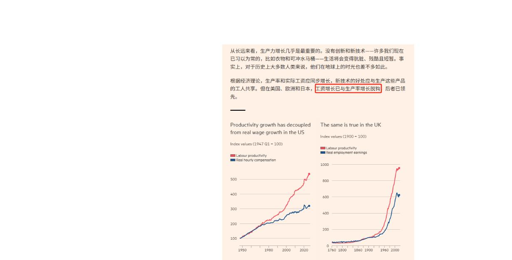
图 1-1：左右两张折线图，横轴是年份，纵轴是指数（左图 1947Q1=100，右图英国 1900=100）。红线=劳动生产率，蓝线=实际薪酬/收入。两条线早期贴合，后期红线（生产率）明显甩开蓝线（薪酬），美国、英国都如此——直观展示"干得越来越多、拿得没跟上"。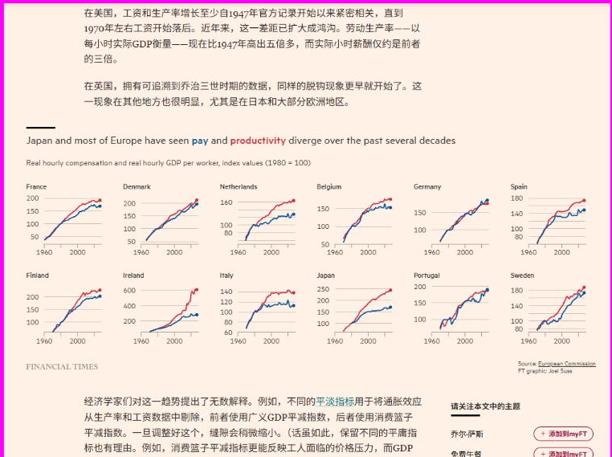
图 1-2：日本和大部分欧洲国家（法、丹麦、荷兰、比利时、德国、西班牙、芬兰、爱尔兰、意大利、葡萄牙、瑞典）的小图矩阵，横轴 1960–2020，1980=100。几乎每张图里红线（生产率）都在蓝线（薪酬）之上——脱钩是发达经济体的普遍现象，不是美国独有。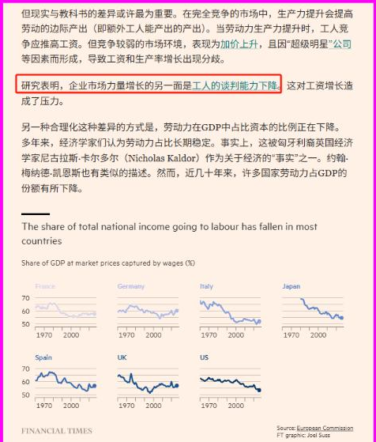
图 1-3：多国"劳动占 GDP 份额（%）"走势（法、德、意、日、西、英、美），纵轴 50%–70%。多数国家的曲线在近几十年整体下行——GDP 这块蛋糕分给工人的那一份在变小。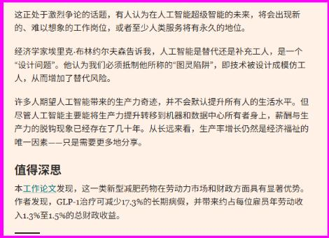
图 1-4：正文段落截图，讲 AI 超级智能情景下"替代还是补充"的争论，以及 GLP-1 减肥药对劳动力市场和财政的正面效应。为什么重要 / 对市场和经济的含义 如果 AI 是资本偏向的，那么 AI 红利更多变成企业利润和股东回报（利好股市尤其科技龙头），但对普通劳动者的工资拉动有限，会加剧贫富分化和"有增长无体感"。这也是理解未来消费疲弱、社会情绪、以及"为什么股市涨但大家没觉得变富"的一把钥匙。
延伸知识
- "图灵陷阱"（Turing Trap）：布林约尔松提出——当我们把 AI 目标设成"像人一样"（通过图灵测试），就会鼓励用机器替代人；若设成"增强人做人做不到的事"，则会创造新岗位。设计导向决定了 AI 是抢饭碗还是造饭碗。
- 卢德谬误 vs 这次不一样：历史上技术进步总体创造的岗位多于消灭的（所以"机器抢工作导致长期失业"常被称为"卢德谬误"）。但"资本偏向"担忧的不是总量失业，而是分配——就算总产出更多，劳动者分到的比例可能持续下降。
帖 2 · 方正证券：预测 7 月 PPI 环比 -0.7%，通缩压力再抬头
发布时间：15:04 标签：#经济数据
帖子原文
方正：我们本周预测 2026 年 7 月 PPI 环比 -0.7%（上月 -0.3%，降幅扩大），同比 +3.5%（上月 +4.1%，止涨回落）。
一句话核心：工业品出厂价格 7 月环比继续下跌、且跌得更多，同比涨幅也见顶回落——生产端通缩压力在加重。
背景与关键数据
- PPI（生产者价格指数，Producer Price Index）：衡量工厂"出厂价"的物价指数，反映的是企业之间、生产环节的价格，通常领先 CPI（居民消费价格）。
- 环比 vs 同比：环比=这个月比上个月（看短期动能）；同比=这个月比去年同月（看趋势水平）。环比 -0.7% 表示 7 月出厂价比 6 月还低；同比 +3.5% 表示比去年 7 月仍高，但涨幅从 +4.1% 缩到 +3.5%，"止涨回落"。
- PPI 长期为负或走弱，往往意味着需求不足、产能过剩，企业没有提价能力，利润承压。
图片解读
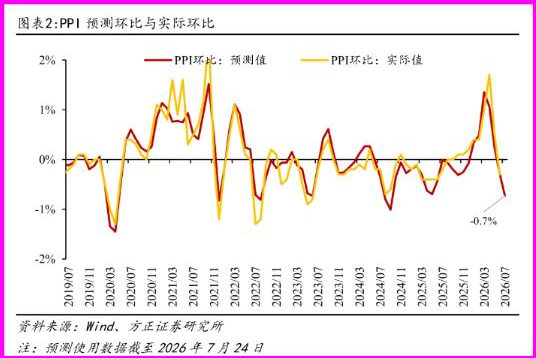
图 2-1（环比）：红线=方正的预测值，黄线=实际值，横轴 2019/07–2026/07。两线高度吻合（说明模型准），最新点砸到 -0.7%（右下角标注），是近一年多的低位——短期动能在恶化。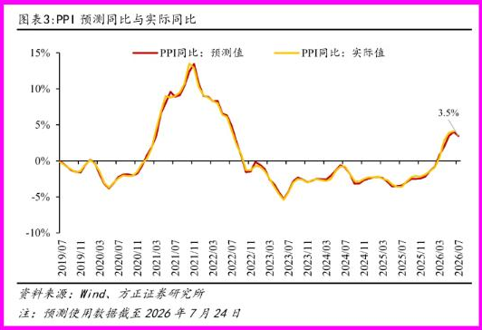
图 2-2（同比）：同样红=预测、黄=实际。可见 2021 年冲到 +13% 的高峰、2023 年跌到 -5% 的谷底，2025 下半年重新回正、2026 年 7 月约 +3.5% 并开始掉头——同比涨幅见顶回落。为什么重要 / 对市场和经济的含义 PPI 走弱直接压制工业企业盈利，也会顺着产业链传导到 CPI，强化"低通胀/通缩"叙事。对政策而言，PPI 疲弱是"需要更宽松（降息、扩需求）"的证据；对资产而言，通缩利空周期股（钢铁、化工、有色），相对利好债券。
延伸知识
- "PPI-CPI 剪刀差"：当 PPI 高于 CPI，说明成本涨价没法完全转嫁给消费者，挤压中游制造利润；反过来则利好中下游。观察这个差值能判断利润在产业链里"往哪端集中"。
- 结合帖 9 李迅雷图"2011–2025 年 PPI 累计涨幅为零"——中国工业品价格 15 年整体原地踏步，这是长期供给过剩、需求不足的写照。
帖 3 · 财通证券：美债利率破 4.7%，特朗普"TACO"信号又出现
发布时间：15:02 标签：#金融
帖子原文
财通：每当 10 年美债利率突破重要关口后，特朗普 TACO 或会出现。5 月 19 日美债利率破 4.7% 时，特朗普暂缓原计划 19 日对伊朗的打击。7 月 24 日，10 年美债利率再度冲击 4.7% 的重要关口，与此同时，潜在的 TACO 信号已出现。
一句话核心：债券市场是特朗普的"紧箍咒"——只要 10 年美债利率冲高到 4.7% 这个痛点，特朗普往往就会在强硬政策上"怂一下"（TACO）。
背景与关键数据
- TACO："Trump Always Chickens Out"（特朗普总是临阵退缩）的缩写，是市场对特朗普"先放狠话、后又软化"行为模式的戏称。
- 10 年期美债利率：全球资产定价的"锚"。利率飙升意味着借钱成本上升、政府利息负担加重、股市估值承压。4.7% 被视为一个会引发市场和政治不适的"关口"。
- 逻辑链：强硬政策（打伊朗/加关税）→ 推升通胀/避险/供给担忧 → 美债利率飙升 → 融资成本与政治压力增大 → 特朗普缓和政策 → 利率回落。
图片解读
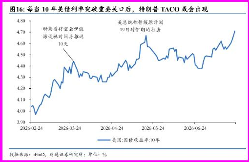
图 3-1：蓝线=美国 10 年期国债收益率，横轴 2026-02 至 2026-06+，纵轴 3.9%–4.8%。图上两处文字标注：左侧"特朗普将空袭伊朗能源设施时间再推迟 10 天"，右侧"美总统称智暖原计划 19 日对伊朗的行动"。可见每次利率逼近 4.7% 高位，都对应一次政策退让，最新又冲到 ~4.7%。为什么重要 / 对市场和经济的含义 这条给了市场一个"可交易的规律"：当美债利率逼近关口、地缘紧张时，与其押注特朗普"来真的"，不如押注他会退缩（利好风险资产、利空避险油价）。它也解释了帖 8 里"美国连续两晚暂停空袭伊朗"的深层动因之一——债市和油价的反噬。
延伸知识
- "债券义警"（bond vigilantes）：指债券投资者用"抛售国债、推高利率"来惩罚他们认为不负责任的财政/政策行为，从而"逼"政府或政客收敛。TACO 本质上是债券义警对政治的约束。
- 利率是"总统的老板"：克林顿时代顾问卡维尔的名言——"我死后想转世成债券市场，因为它能吓住所有人。"美债利率对政策的约束力，在特朗普 2.0 时代再次上演。
帖 4 · 伍戈：投资是利率的函数，企业投资回报率已"转负"
发布时间：15:00 标签：#经济数据
帖子原文
伍戈：投资是利率的函数。我国融资成本稳中略降，但企业投资回报率的变化似更陡峭。
一句话核心：钱不贵了（贷款利率在降），但投出去更不赚钱了（回报率降得更快），所以企业没有动力投资。
背景与关键数据
- "投资是利率的函数"：经济学基本关系——当融资成本（利率）低于投资回报率时，企业愿意借钱投资；一旦回报率跌破融资成本，投资就会萎缩。
- 企业投资回报率（ROIC）：投一块钱资本能赚回多少。图注说明用的是"上市企业 ROIC"。
- 关键矛盾：贷款利率虽降，但投资回报率降得更陡，两条线交叉后进入"投资转负"区间——这正是当前中国民间投资低迷（见帖 9：上半年民间投资 -8.5%）的微观原因。
图片解读
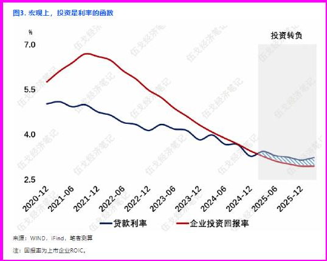
图 4-1：蓝线=贷款利率，红线=企业投资回报率，横轴 2020-12 至 2025-12。早期红线（回报率约 7%）高高在上，随后一路下滑；蓝线（贷款利率）平缓下行。约 2024 年两线交叉，之后阴影区标注"投资转负"（回报率跌破融资成本）。为什么重要 / 对市场和经济的含义 这解释了"降息为什么效果差"：央行压低利率想刺激投资，但如果投资回报率跌得更快，降息追不上，企业照样不投。这就是**"流动性陷阱/资产负债表衰退"**的典型症状——货币政策在推绳子。对策通常需要财政发力、改善预期、提升回报率（而非单纯降息）。
延伸知识
- 推绳子（pushing on a string）：形容货币宽松在需求极弱时失效——央行能"拉"（加息抑制过热），却难"推"（降息刺激不动）。
- 资产负债表衰退（辜朝明提出）：当企业和居民都忙着还债、修复资产负债表，而非借钱扩张时，再低的利率也无法刺激借贷，经济陷入长期低迷。日本 1990s 是经典案例，也是理解当前中国的重要框架。
帖 5 · 申万宏源：黄金这轮暴跌，是"投资需求退坡"不是"去美元化终结"
发布时间：14:57 标签：#金融
帖子原文（转写）
申万宏源：3 月以来，黄金价格持续调整；即便放到历史上来看，本轮黄金的下跌速度都是较为罕见的，也是 1980 年以来黄金最快的一次回撤。仅 1978 年 11 月和 1980 年一季度的两次黄金下跌较这次更为迅猛……6 月至今多个维度指标显示黄金或接近短期底部，但黄金却时隔一个多月还在磨底。6 月以来，全球黄金 ETF、中国黄金 ETF 持仓量分别减少 55 吨、13 吨。
我们认为黄金并非在交易"去美元化"，央行调查层面 60% 以上央行认为购金与"去美元化"完全无关……美元在国际支付中的份额 2022 年以来上升了 10.2% 且仍在攀升。因而美元企稳回升，也不构成黄金行情终结的理由。
短期涨跌中，投资需求这一"快变量"才是关键；导致黄金"传统框架回归"的是中国投资需求阶段性退坡……而中国投资需求退坡，受到 A 股市场情绪过热与人民币持续升值的抑制。当前制约欧美投资需求的，仍是加息预期居高不下。油价或是当前制约加息预期下修的关键……黄金的催化，还需耐心等待。
一句话核心：黄金这轮跌得又快又狠，但跌的原因是"买盘（投资需求）暂时退场"，而不是黄金的长期逻辑（去美元化）坏了；要等中国买盘回来 + 美联储加息预期降温，金价才有新的向上催化。
背景与关键数据
- 黄金定价三因素：①实际利率（持有黄金的机会成本，实际利率↑→金价↓）；②美元（多数情况下负相关）；③投资/避险需求（"快变量"，短期波动主导）。
- "去美元化"叙事：市场曾用"各国央行囤金、抛美元"来解释黄金牛市。申万这里反驳：央行自己说购金和去美元化无关，且美元支付份额还在升——所以别把这波下跌当成"去美元化逻辑破产"。
- ETF 持仓：黄金 ETF 的持仓量变化=金融投资者态度的温度计。6 月以来全球减 55 吨、中国减 13 吨=投资盘在撤。
- 注意：图 19 显示金价从约 $5400/盎司跌到约 $4000/盎司——这是本轮回撤的量级。
图片解读（9 张）
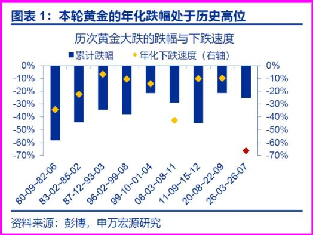
图 5-1｜历次黄金大跌的跌幅与速度：蓝柱=累计跌幅，黄/红点=年化下跌速度。最右侧红点（26-03 至 26-07 本轮）位置极低——本轮年化跌速处于历史高位，仅次于 1978、1980 那两次。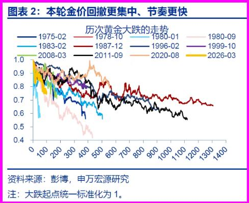
图 5-2｜历次金价走势对比：把每轮大跌起点统一标准化为 1，叠加多条历史曲线。最粗的黄线（2026-03）下滑最陡最集中——这轮回撤"更快更猛"。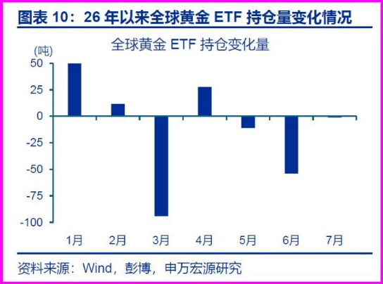
图 5-3｜全球黄金 ETF 持仓变化量（吨）：柱状图，1 月大幅流入（+50），3 月巨额流出（约 -95 吨），6 月再流出（约 -55 吨）——投资盘撤离的直接证据。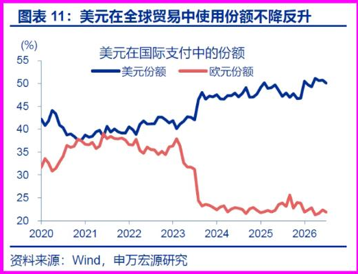
图 5-4｜美元国际支付份额：蓝线=美元份额升至约 50%，红线=欧元份额跌到约 22%。美元不降反升，反驳"去美元化"叙事。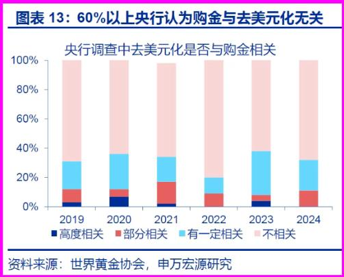
图 5-5｜央行调查：去美元化是否与购金相关：堆积柱状，粉色"不相关"占比 60% 以上且稳定——多数央行认为买金和去美元化无关。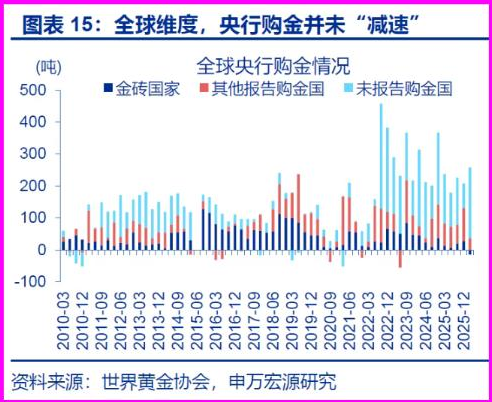
图 5-6｜全球央行购金情况：金砖国家+其他报告国+未报告国分层堆积，2022 年后整体抬升——央行购金并未"减速"（长期需求仍在）。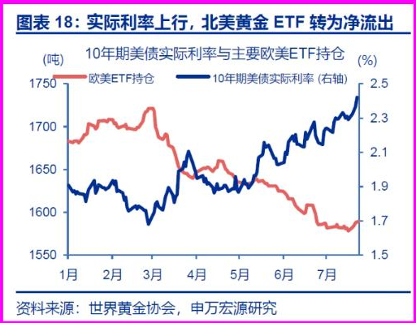
图 5-7｜实际利率 vs 欧美 ETF 持仓：红线=欧美 ETF 持仓，蓝线=10 年美债实际利率（右轴）。两者明显反向——实际利率上行时，北美黄金 ETF 转为净流出（持有黄金的机会成本变高）。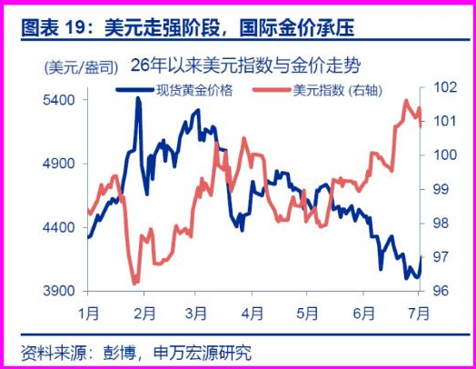
图 5-8｜美元指数 vs 现货金价：蓝=金价（从 ~5400 跌到 ~3950），红=美元指数（右轴，走强至 ~101）。美元走强阶段，国际金价承压。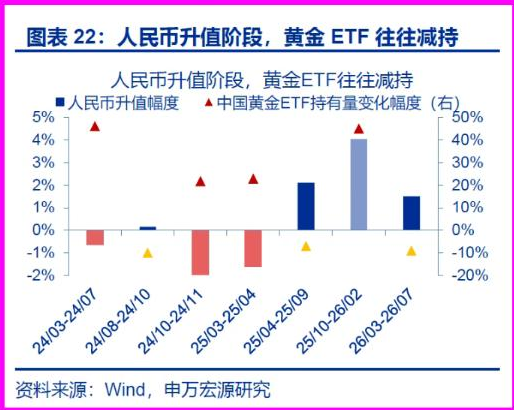
图 5-9｜人民币升值 vs 中国黄金 ETF 持仓：柱=人民币升值幅度，三角=中国黄金 ETF 持有量变化。人民币升值阶段，中国黄金 ETF 往往被减持（升值时资金更愿留在人民币资产/A 股）。为什么重要 / 对市场和经济的含义 这是一份"别恐慌、但也别急着抄底"的报告：长期逻辑（央行购金、美元非霸权终结）没坏，所以不必看空黄金的大方向；但短期催化不足（实际利率高、中国买盘退、美元强），所以要"耐心等待"美联储转向和中国资金回流。对配置者：黄金仍是长期底仓，短期波动是仓位管理问题而非方向问题。
延伸知识
- 实际利率 = 名义利率 − 通胀预期：黄金不生息，实际利率就是持有黄金的"机会成本"。实际利率越高，越不划算持金——这是金价最硬的定价锚。
- "快变量 vs 慢变量"：慢变量（央行购金、去美元化）决定长期趋势和底部；快变量（ETF 投资盘、实际利率、汇率）决定短期涨跌。看金价要分清你在交易哪个时间维度。
帖 6 · 长江证券：中国消费率过低，破局要靠"养老服务消费"
发布时间：14:50 标签：#经济数据
帖子原文（转写）
长江：中国经济过去数十年由土地财政循环链条主导，经济增长的方向更偏重生产和投资，居民部门将大量财富配置于房地产市场，从而对消费形成结构性的压制，导致消费明显偏离同等发展水平经济体的常态化区间。从联合国预测未来人口趋势上看，老年人口占比提升或是长期趋势，因此提振养老消费为代表的服务消费为提升消费率的势在必行之举。
一句话核心：中国"重生产、轻消费+钱都压在房子上"，导致居民消费率异常低；未来靠老龄化催生的养老/服务消费来补短板。
背景与关键数据
- 土地财政循环：地方政府卖地→融资搞建设/投资→推高房价→居民买房→财富锁定在房产。这套循环把资源导向"投资和生产"，挤压了"消费"。
- 居民消费率：居民消费占 GDP 的比例。图 1 显示中国仅 40.0%，而美国 67.9%、英国 60.8%、日本 53.1%——中国明显低于同等发展水平应有的区间。
- 服务消费/养老消费：随着 65 岁以上人口占比上升，医疗、康养、护理等服务需求会成为消费新引擎。
图片解读
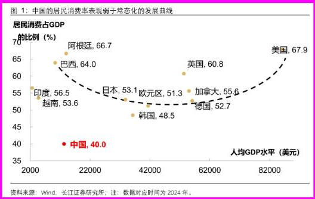
图 6-1｜居民消费率 vs 人均 GDP 散点：横轴=人均 GDP（美元），纵轴=居民消费占 GDP 比例。虚线是"常态化曲线"（呈 U 形：穷国和富国消费率高、中间偏低）。各国标注：美国 67.9、阿根廷 66.7、巴西 64.0、英国 60.8、印度 56.5、加拿大 55.6、越南 53.6、日本 53.1、欧元区 51.3、韩国 48.5、德国 52.7。中国 40.0（红点）孤零零地远低于曲线——消费被结构性压制的铁证。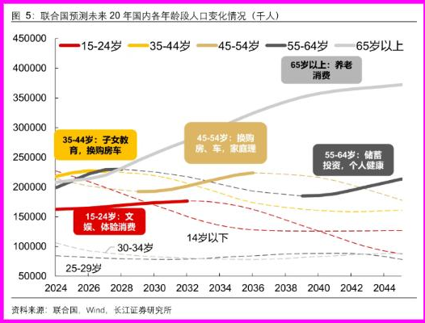
图 6-2｜联合国预测未来 20 年各年龄段人口（千人）：不同颜色代表 15-24、35-44、45-54、55-64、65 岁以上。灰线"65 岁以上"一路上扬到 2044 年约 3.7 亿，并标注"养老消费"；其它标注：35-44 岁"子女教育、换购房车"、45-54 岁"换购房、家庭理财"、55-64 岁"储蓄投资、个人健康"。老龄段膨胀→养老服务消费是确定性增量。为什么重要 / 对市场和经济的含义 这条既是宏观诊断（消费率过低是增长转型的核心障碍），也是产业线索（养老、医疗、康养、银发经济是长期赛道）。政策上"促消费"若只发消费券治标不治本，真正要解决的是"土地财政依赖+居民财富过度押注房产"的结构问题。
延伸知识
- 消费率的"U 形曲线"：极穷的国家（活下去全靠消费）和极富的国家（服务业发达）消费率都高，处在工业化/投资驱动阶段的国家消费率偏低。中国正卡在"投资驱动"向"消费驱动"转型的关口。
- "预防性储蓄"：养老、医疗、教育保障不足时，居民会多存钱少花钱以防万一。完善社保是提升消费率的关键——这也是为什么"养老"既是消费增量、也是消费信心的来源。
帖 7 · Bloomberg：美墨谈判联手围堵中国，重塑北美供应链
发布时间：14:45 标签：#政策分析
帖子原文（图片全文转写，比正文更完整）
美国和墨西哥一直在举行双边会谈，作为审查北美贸易协定 USMCA 的一部分。自 7 月 1 日美国拒绝以现有形式续签条约，转而转为滚动谈判，以加强区域原产地规则并限制中国在北美的作用后，利害关系更高。
作为这些对话的一部分，美国贸易代表贾米森·格里尔和经济部长马塞洛·埃布拉德上周在墨西哥城举行了第三轮双边会谈。讨论内容包括钢铁和铝业、汽车、经济安全、劳工和农业等话题。两国政府计划在华盛顿九月再次会面，并强调必须停止非条约国家"搭便车"。
据一位人士透露，为了推进谈判，墨西哥今年早些时候提出大幅减少中国钢铁的采购。
图片解读
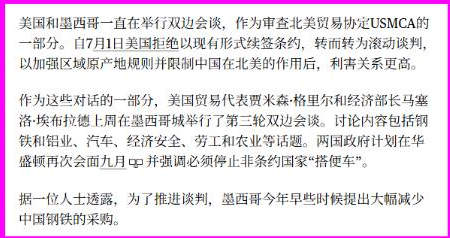
图 7-1：Bloomberg 报道截图，讲美墨双边会谈、USMCA 滚动谈判、收紧原产地规则以限制中国在北美的作用，以及墨西哥提出减少采购中国钢铁。一句话核心：美国借重谈 USMCA，拉墨西哥一起收紧"原产地规则"，目标是把中国商品挤出北美供应链；墨西哥为换取谈判筹码，主动提出少买中国钢铁。
背景与关键数据
- USMCA：美墨加协定（NAFTA 的升级版），2020 年生效，本应 2026 年做联合审查。这里美国把"续签"变成"滚动谈判"，加大施压。
- 原产地规则（rules of origin）：规定一件产品要有多少比例在区域内生产，才能享受零关税。收紧规则=堵住"中国零部件经墨西哥组装再零关税进美国"的后门。
- "搭便车"（free-riding）：指非协定国（暗指中国）借道墨西哥，享受北美贸易红利却不承担义务。
为什么重要 / 对市场和经济的含义 这是"友岸外包/近岸外包"（friend-shoring / near-shoring）的又一步：全球供应链从"效率优先"转向"安全/阵营优先"。对中国出口是长期逆风（北美这道门在收窄）；对墨西哥是"选边"的代价与机遇；对相关行业（钢铁、汽车、电子）意味着供应链重构、成本上升。呼应帖 9 李迅雷"中国出口份额仍 14%+但出口价格跌 20%"——份额靠降价维持，贸易环境在恶化。
延伸知识
- 近岸外包（nearshoring）：把生产从远方（如中国）搬到离终端市场近的地方（如墨西哥之于美国）。疫情+地缘让"离岸求便宜"让位于"近岸求安全"，墨西哥是最大受益者之一，但美国现在要确保这个"近岸"不变成"中国后门"。
- 原产地规则是隐形关税战场：关税是明战，原产地规则是暗战。提高"区域价值成分"门槛，可以在不加关税的情况下，把特定国家的产品挡在优惠之外。
帖 8 · zerohedge：伊朗与乌克兰两个战场"串联"，美伊暂停空袭第二天
发布时间：14:40 标签：#其他国家经济
帖子原文
zerohedge：伊朗和乌克兰两个地缘串联起来了。
配图为一组英文财经/地缘快讯截图，要点转写：
摘要（图 8-1）
- 伊朗指责泽连斯基下令对里海船只进行致命攻击；
- 周末美国原油通过 IG Markets 下跌 5%；
- 如果美国继续暂停（空袭），伊朗将停止"以牙还牙"的打击；
- 伊朗、阿曼举行霍尔木兹会谈，美国暂停空袭第二天。
- Polymarket 预测市场："US x Iran Effective Ceasefire by August 31?"（8 月 31 日前美伊有效停火？）报价 74%（Yes 73¢ / No 27¢），且近期快速跳升。
细节（图 8-2 至 8-6）
- 路透社：一位伊朗高级官员称，只要美国继续暂停空袭，伊朗就会停止自己的攻击；此前特朗普突然终止了连续两周的轰炸行动。连续 13 晚加剧空袭后，五角大楼周五深夜暂停行动，周六周日均未报告美国袭击。
- 美国驻联合国大使迈克·沃尔兹：特朗普决定暂停攻击，以便有更多时间进行外交。
- 伊朗与阿曼外长周五、周六在德黑兰会谈，讨论恢复商船通过霍尔木兹海峡的安全通行，"谈判具有建设性、取得了一些进展"。
- 油价：布伦特原油期货价格飙升至三位数，全美普通汽油均价突破政治敏感的"4 加仑"关口（编者注：图中"4 加仑"疑为"4 美元/加仑"）。摩根大通警告布油在这一水平可能加大华盛顿重启外交的压力。
- 区域溢出：UKMTO（英国海事贸易行动办公室）发布 097-26 号可疑活动警告——红海南部一艘油轮附近发现不明弹丸溅起的水花，船员安全；一艘载 28 名印度船员的液化石油气油轮在伊朗领海遭袭，机组安全。
- 乌战外溢东欧：罗马尼亚国防部报告，两架无人机在不到 24 小时内进入其领空，F-16 战斗机紧急升空击落；意大利空军也派"台风"战斗机击落无人机。当局指向俄罗斯军方（沙赫德型无人机）。
一句话核心：中东（美伊）和东欧（俄乌）两条地缘火线正在"联动"——都在朝"降温但未结束"的方向走（美伊暂停空袭+谈判，油价回落），但外溢风险（红海航运、东欧领空）仍在。
背景与关键数据
- 霍尔木兹海峡：全球约 1/5 石油海运的咽喉。任何封锁威胁都会让油价飙升——所以"恢复商船安全通行的会谈"对油价是重大利好（周末油价 -5%、-4.6%）。
- Polymarket：基于真实资金下注的去中心化预测市场，报价可解读为"事件发生概率"。74% = 市场认为 8 月底前美伊停火的可能性较高。这是一种"用钱投票"的实时概率信号。
图片解读（6 张）
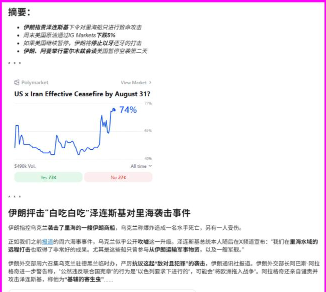
图 8-1：zerohedge 摘要+Polymarket 图。折线快速上冲到 74%，说明市场对"停火"的信心在一两天内明显升温。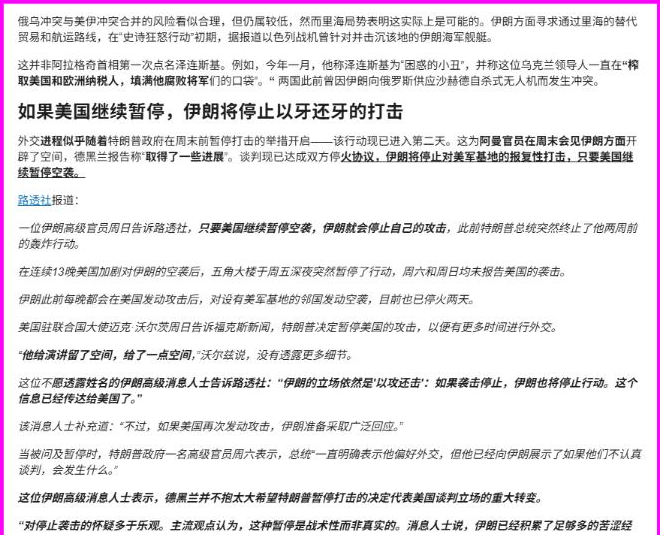
图 8-2：路透社细节，"只要美国继续暂停空袭，伊朗就会停止自己的攻击"——互相递台阶的降温信号。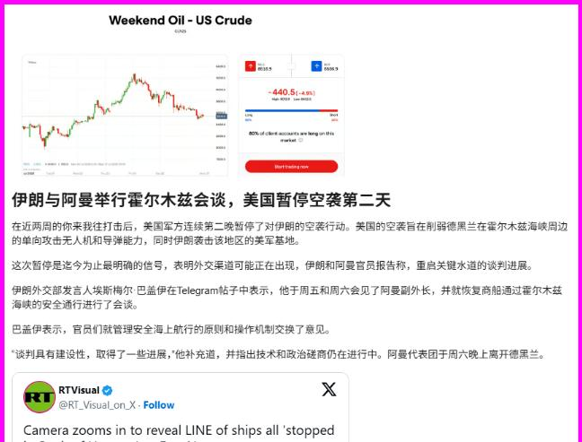
图 8-3：Weekend Oil - US Crude 走势图，K 线尾部下挫，标注 -440.5（-4.6%）；下方"伊朗与阿曼举行霍尔木兹会谈，美国暂停空袭第二天"——油价用下跌确认了降温。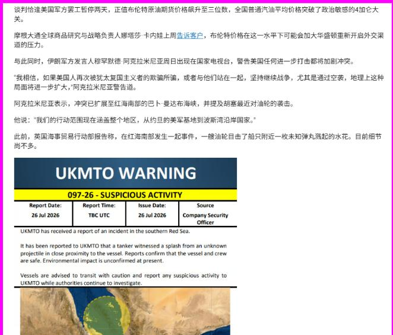
图 8-4：油价飙至三位数、汽油破 4 美元/加仑；下方 UKMTO WARNING 097-26（红海南部可疑活动）——航运风险仍在。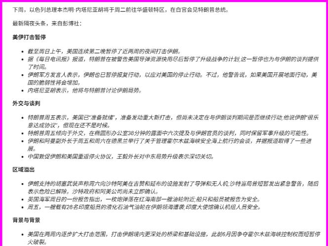
图 8-5：彭博社隔夜头条汇总，分"美伊打击暂停/外交与谈判/区域溢出/背景"四栏，系统梳理事件全貌。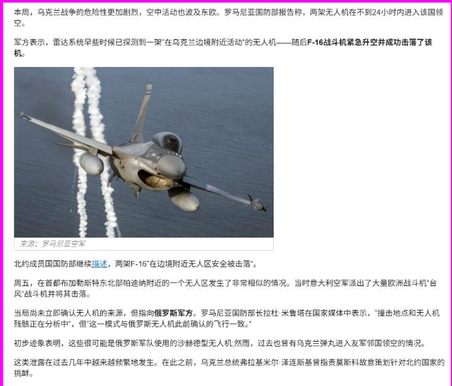
图 8-6：罗马尼亚 F-16 击落入侵无人机的配图与报道——俄乌战争的火星溅到北约东翼。为什么重要 / 对市场和经济的含义 油价是连接地缘与全球通胀/货币政策的关键变量（呼应帖 5：油价是制约美联储加息预期下修的关键；帖 3：美债利率关口）。地缘降温→油价回落→通胀压力缓解→有利于降息预期与风险资产。但"降温未结束"意味着油价仍有二次冲高风险，需持续跟踪霍尔木兹与红海。
延伸知识
- 预测市场（prediction market）：像 Polymarket 这样的平台，让人用真金白银对未来事件下注，赔率天然反映"群体智慧"下的概率。相比民调，它有"用钱背书"的约束，常被交易员当作实时风险温度计。
- 地缘政治风险溢价（geopolitical risk premium）：油价里包含一块"怕出事"的溢价。一旦紧张缓和，这块溢价会快速蒸发（所以周末油价能一次跌 5%）——理解这一点就能看懂"消息一出、油价暴动"的逻辑。
帖 9 · 李迅雷《第二种声音》：追随趋势 > 探寻拐点
发布时间：14:22 标签：#扯淡
帖子原文
李迅雷这篇写了我想写的，我题目都想好了，叫《第二种声音》。 什么是第二种声音？比如我去上市公司调研，因为我要给他们钱，他们要说服我，所以我能听到老板和 CFO 给我算账，他们有第一种声音，那是给大家听的，有第二种声音，那是他们的心理活动。去地方平台调研，亦是如此。 第二种声音，是很难在阳光下传播的，不然就会失去秩序。而第一种声音，就是我们所说的"叙事"，是卖方都在不断强化的本领。然后形成路径依赖，第二种声音能分辨出政策绑架。 听到第二种声音的人，会发现好人很难做好事； 与此相对的，能清楚看到一群人——"不是坏人，但一直在做坏事"。
配图为李迅雷长文《探寻拐点还是追随趋势》的多页截图，核心观点转写：
- 20 年前（2005–2007 牛市）他就提出"探寻拐点还是追随趋势"。当时上证从 1000 点涨到 6000 点，他判断牛市初期应追随趋势（因为中国正处重化工业化、城镇化高增长、人口红利释放阶段）。
- 相信逻辑，而非高频数据：高频数据有随机性，未必反映趋势。2017 年经济数据回暖时有人预言"经济新周期"，但他认为经济传导存在"时滞"（快慢、长短不一），写过《可怕的时滞》。
- 投资拉动模式的困局：2015 年民间投资占比达 64.2%（历史峰值），2016 年开始下行；今年上半年固定资产投资 -5.7%、民间投资 -8.5%。房地产投资早在 2010 年见顶（33%），但周期回落到 2021 年才发生，时滞长达 11 年。
- 人口红利变负担：过去年轻人口是红利，如今退休成为财政负担；居民房贷过去是优质资产，如今变债务压力。
- 方法论："宏观研究一定要系统思考，要用望远镜看趋势，不要用显微镜找拐点。"
- K 型分化早已开始：特朗普"美国优先"愿景至今未实现（财政更糟、贸易战没让美国受益）；中国出口价格指数近三年跌 20%，但出口份额仍保持 14% 以上——份额靠降价维持。
- 探寻拐点的四大难点：①时间跨度不够长；②"因"很多、"果"只有一个（用单因素推导易"盲人摸象"）；③市场带情绪、非理性泡沫难预测；④预测者自身有偏好和利益（bias）。
一句话核心：别沉迷于抓拐点、被短期数据和"叙事"带节奏；趋势一旦形成会持续很久，追随趋势的胜算远大于赌拐点。同时要学会听"第二种声音"——被调研对象、卖方叙事背后没说出口的真实。
图片解读（8 张，均为文章截图+嵌入图表）
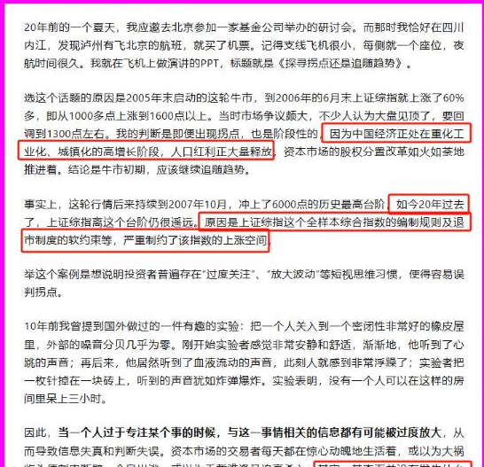
图 9-1：文章开头，讲 2005–2007 牛市案例，重化工业化/城镇化/人口红利支撑"追随趋势"。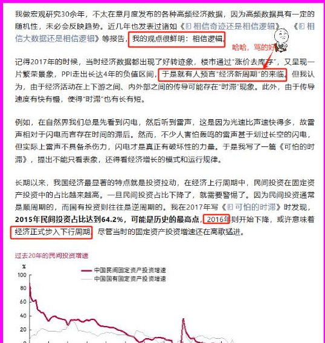
图 9-2："相信逻辑"、时滞概念；底部图表"过去 20 年民间投资增速"——红线（民间固投增速）从 80%+ 一路下滑至负值。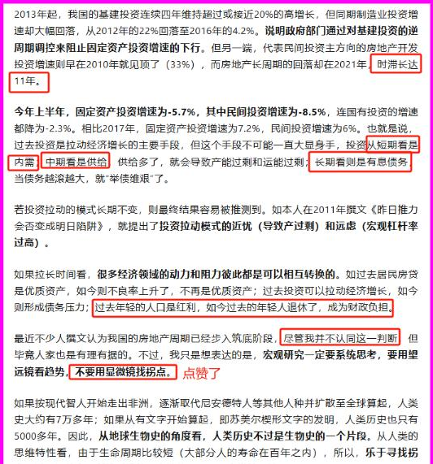
图 9-3：今年上半年固投 -5.7%、民间投资 -8.5%；房地产时滞 11 年；"望远镜看趋势、不要显微镜找拐点"。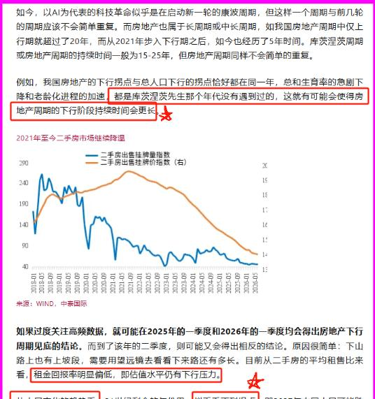
图 9-4：AI 康波周期讨论；图表"2021 年至今二手房市场持续降温"——挂牌量指数、挂牌价指数双双下行。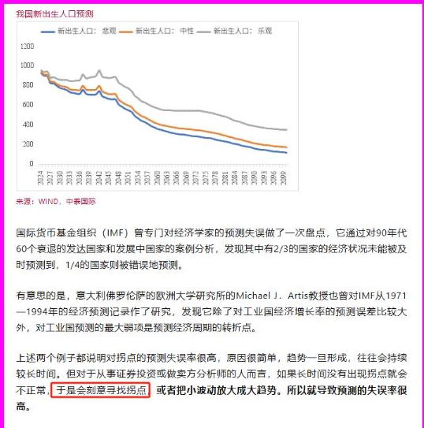
图 9-5：图表"我国新出生人口预测"（悲观/中性/乐观三情景，均单边下滑）；IMF 预测失误率高（2/3 衰退未被及时预测）。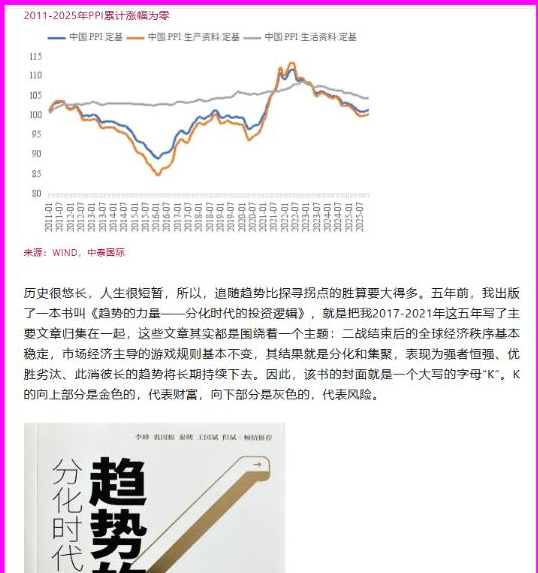
图 9-6：图表"2011–2025 年 PPI 累计涨幅为零"（工业品价格 15 年原地踏步）；李迅雷《趋势的力量——分化时代的投资逻辑》书封（大写字母 K）。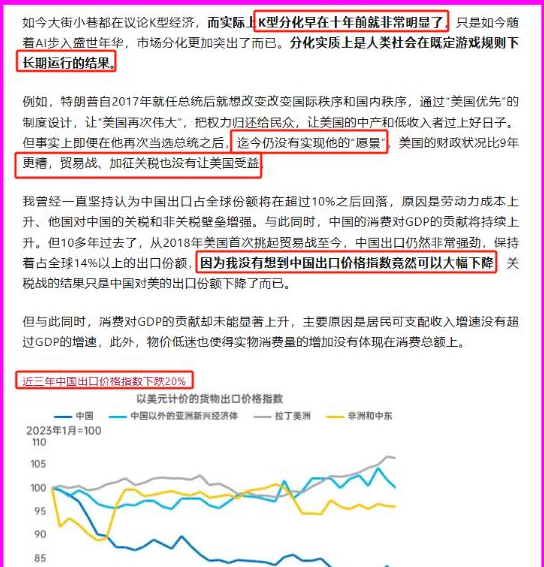
图 9-7：K 型分化十年前已显；图表"近三年中国出口价格指数下跌 20%"（以美元计的货物出口价格指数）——出口"以价换量"。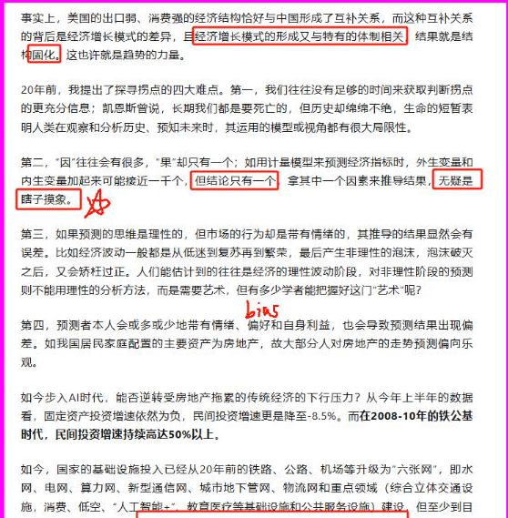
图 9-8：探寻拐点的四大难点（时间、单因素、情绪、预测者 bias）；AI 时代能否逆转房地产拖累的传统经济下行压力。为什么重要 / 对市场和经济的含义 这是一份"投资方法论+宏观诊断"的合集。方法论上提醒：面对海量高频数据和卖方"叙事"，要抓长期趋势、警惕拐点幻觉。诊断上：民间投资转负、房地产长周期回落、人口拐点、出口以价换量、PPI 十五年零涨幅——几乎所有长期变量都指向"通缩式、L 型"的趋势，这与帖 2/4/6 相互印证。
延伸知识
- "第二种声音" ≈ 信息不对称下的私人信息：经济学里，被调研方、卖方分析师都有动机只说"给你听的话"（第一种声音）。识别"第二种声音"就是穿透激励结构，看清谁在为自己的利益塑造叙事——这是投资者最值钱的能力之一。
- 趋势 vs 拐点（动量 vs 反转）：金融学两大策略。追随趋势=动量策略（顺势），探寻拐点=反转策略（抄底摸顶）。李迅雷的经验是：在长期结构性趋势里，动量的胜率更高，因为"趋势一旦形成往往持续较长时间"。
帖 10 · 经济观察报：基层财政"十个瓶子几个盖"，底线与红线
发布时间：13:59 标签：#TAX
帖子原文
经济观察报：上次说"十个瓶子几个盖"还是说的房产公司，不过房产公司本来就是广义财政的包税者之一。
配图为经济观察报专访辽宁大学地方财政研究院院长王振宇的截图，核心转写：
- "十个瓶子几个盖"：形容基层财政资金极度紧张、腾挪填缺——收入盖不住支出，只能拆东墙补西墙。
- 两个悖论：①合情、合理、合适，但不合规、不合法、不合审（为保刚性支出如"三保"，在财力不足时挪用/挤占资金）；②合规、合法、合审，但不合情、不合理、不合适（当下某些过度推进的特许经营、盘活资产项目）。
- "底线"（下限）：即"三保"——保基本民生、保工资、保运转，属刚性支出，必须按时足额发放，触及底线会引发风险。
- "红线"（上限）：理财过程中的非理性筹资行为，如新增隐性债务、"新三乱""过分盘活三资"等，构成"高压线"。
- 财政空间："底线"越低、"红线"越高，财政空间越充足；反之则空间逼仄。
- 出路：不能继续沿用一般的"药方"（如增加转移支付、削减"三公"经费）治标；要靠增强地方财政与安全层面相匹配的财力、财权和应急处置权，提高资产负债表跨周期抗风险能力。
一句话核心：基层政府"钱紧到拆东补西"，在"必须保民生工资（底线）"和"不能乱借钱（红线）"之间走钢丝；靠老办法解决不了，需要体制层面的财权/财力重构。
背景与关键数据
- 基层财政：多指县、乡两级。"乡财县管"下县级财政涵盖县本级和乡镇。近些年土地出让收入下滑（呼应帖 6"土地财政循环"），基层收支矛盾突出。
- "三保"：保基本民生、保工资、保运转——中央反复强调的基层财政底线。
- 隐性债务：不在政府法定债务口径内、但实质由政府兜底的债务（如城投平台债）。是"红线"重点防范对象。
图片解读（3 张，均为访谈文字）
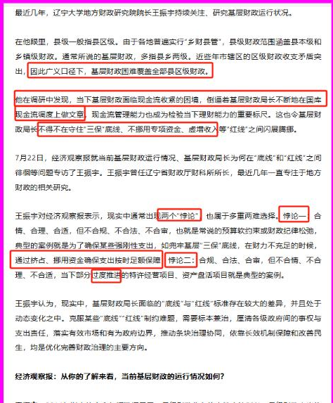
图 10-1：介绍王振宇及"两个悖论"、现金流收紧、现金流管理成为理财能力标尺。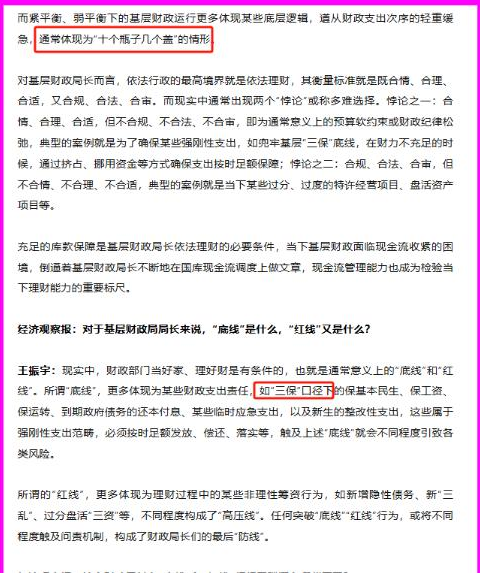
图 10-2："十个瓶子几个盖"情形；详解"底线=三保""红线=非理性筹资"的定义。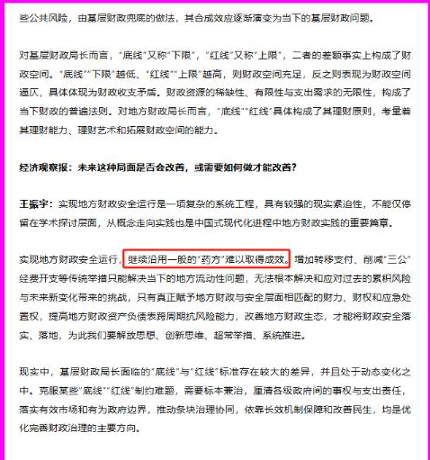
图 10-3：底线/红线构成"财政空间"；结论——沿用一般"药方"难见成效，需系统性重构财权财力。为什么重要 / 对市场和经济的含义 基层财政紧张是理解"化债、城投、地方国企资产盘活、税费征管趋严"的底层逻辑。它连着房地产（土地收入下滑）、连着债务风险（隐性债务）、连着居民预期（税费、公共服务）。当"十个瓶子几个盖"从房企蔓延到地方政府，说明广义财政的紧平衡已是系统性问题——这也是宏观政策"既要扩需求又要防风险"两难的根源。
延伸知识
- 广义财政 / "包税人"：除了税收，土地出让、国企利润、城投融资都构成政府的广义财源。房企过去是"土地财政"的关键包税人（买地=给政府交钱），房企出事，广义财政就少了一大块进项。
- 紧平衡（tight balance）：收支勉强打平、毫无冗余的状态。一旦有突发支出或收入下滑就会"绷断"。当前从房企到基层政府都处于紧平衡，是理解"为什么各方都要化债、盘活、开源节流"的关键词。
今日全图索引
| 帖号 | 时间 | 主题 | 标签 | 图片文件 |
|---|---|---|---|---|
| 1 | 15:08 | FT：AI 是资本偏向型技术，薪酬与生产率脱钩 | #职业 | post1_img1~4 |
| 2 | 15:04 | 方正：7 月 PPI 环比 -0.7%，通缩再抬头 | #经济数据 | post2_img1~2 |
| 3 | 15:02 | 财通：美债破 4.7% 触发特朗普 TACO | #金融 | post3_img1 |
| 4 | 15:00 | 伍戈：投资是利率的函数，回报率转负 | #经济数据 | post4_img1 |
| 5 | 14:57 | 申万宏源：黄金暴跌是需求退坡非去美元化终结 | #金融 | post5_img1~9 |
| 6 | 14:50 | 长江：中国消费率过低，靠养老服务消费破局 | #经济数据 | post6_img1~2 |
| 7 | 14:45 | Bloomberg：美墨联手收紧原产地规则围堵中国 | #政策分析 | post7_img1 |
| 8 | 14:40 | zerohedge：伊朗与乌克兰地缘串联，美伊暂停空袭 | #其他国家经济 | post8_img1~6 |
| 9 | 14:22 | 李迅雷《第二种声音》：追随趋势>探寻拐点 | #扯淡 | post9_img1~8 |
| 10 | 13:59 | 经济观察报：基层财政"十个瓶子几个盖" | #TAX | post10_img1~3 |
图片原文件保存在
daily_summaries/jason_images/2026-07-26/（共 37 张）。本报告已把图片内嵌为 base64，单文件即可查看。说明：部分图片为竖版长文截图（FT、李迅雷、经济观察报等），受浏览器视窗高度限制，截图仅覆盖到当屏可见部分；正文关键内容已在对应帖子中完整转写，阅读不受影响。